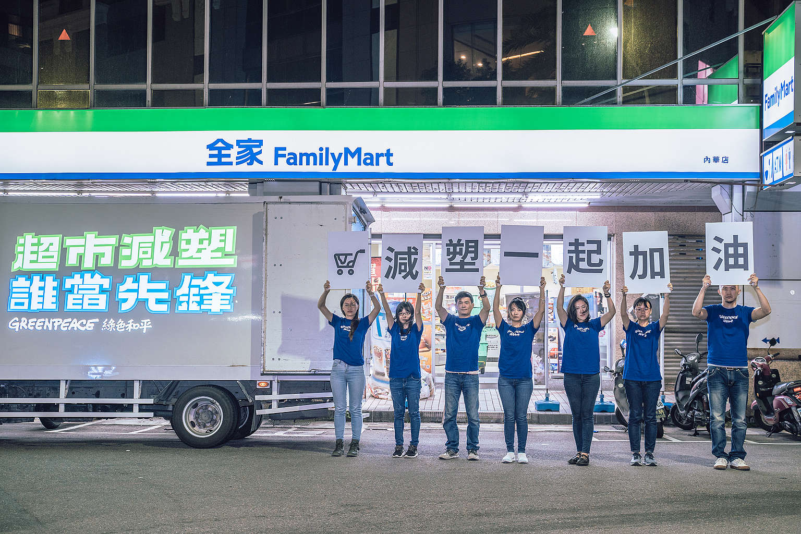

background

Through research & monitoring
point out non-environmental friendly practice & enhance environmental consciousness of Taiwan
塑膠有回收就好了吧？關於減塑的3大迷思!
1. 只要努力做好回收，就可以解決？
根據統計，全球從 1950 年開始所製造的塑膠產品，至今有超過 90% 沒有被回收。回收是廢棄物處理的重要一環，但只仰依賴回收，完全無法趕上塑膠被製造出來、使用與拋棄的速度。
2.用紙張取代，比較環保？
塑膠污染的解決之道，並非由一種一次性使用的材料換成另一種。而需要從企業銷售並推波助瀾的一次性「便利」文化中徹底改變，優先推廣再利用、減少浪費的物流系統。若從拋棄式的塑膠轉到紙張，只是把問題轉移，包括影響已經有限的森林資源。
3. 改用生物可分解塑膠，就可以了？
生物可分解塑膠容易引致的誤解，是許多人以為隨手丟入環境，就能分解。其實，市面上大部分「生物可分解塑膠」，需要在高溫、高濕的堆肥環境，再加上好幾個月的時間才會被分解。如果使用它的企業沒有負起收回、妥善處理的責任，一旦流入環境，造成的危害和傳統的塑膠是一樣的。 還有迷思沒有被解惑到嗎？看其他三個常見減塑迷思吧！ 回收無法解決塑膠污染問題？真正的解法在這裡！